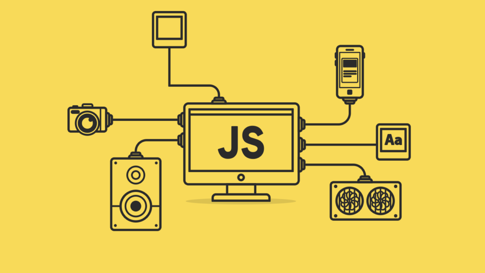
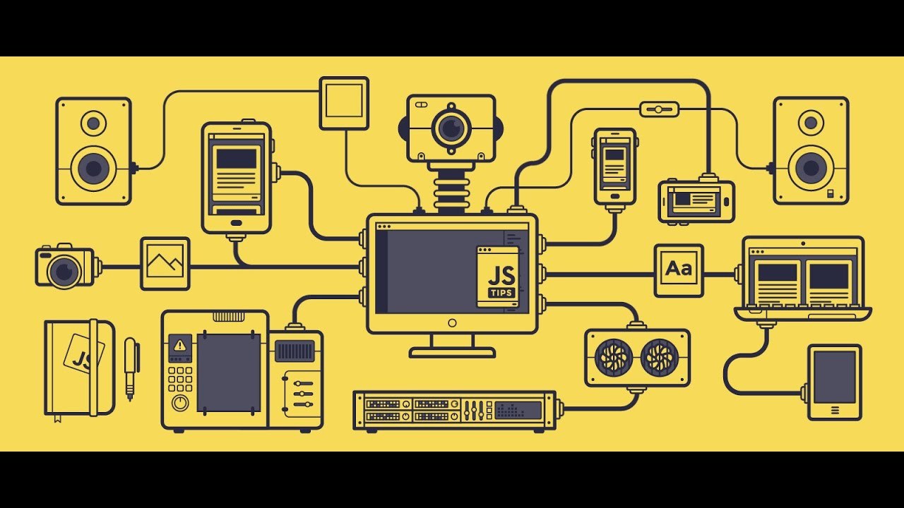

¿Qué es JavaScript?
JavaScript es un lenguaje de programación que se utiliza principalmente para crear contenido interactivo en páginas web. Fue desarrollado por Netscape en 1995 y desde entonces se ha convertido en uno de los lenguajes de programación más populares del mundo. JavaScript permite a los desarrolladores agregar funcionalidades dinámicas a sus sitios web, como animaciones, validación de formularios, juegos y aplicaciones web completas.
Historia de JavaScript
JavaScript fue creado por Brendan Eich en 1995 mientras trabajaba en Netscape Communications Corporation. Originalmente se llamaba Mocha, luego fue renombrado a LiveScript y finalmente a JavaScript. A pesar de su nombre, JavaScript no tiene relación directa con el lenguaje de programación Java. Desde su creación, JavaScript ha evolucionado significativamente, y en 1997 se estandarizó como ECMAScript por ECMA International.
¿Cómo usar JavaScript con HTML?
Para usar JavaScript en un documento HTML, se puede incluir directamente en la etiqueta <script> dentro del <head> o <body> del documento. También se puede enlazar a un archivo externo de JavaScript utilizando la etiqueta <script src="archivo.js"></script>. Es recomendable colocar las etiquetas <script> al final del <body> para mejorar el rendimiento de carga de la página.
